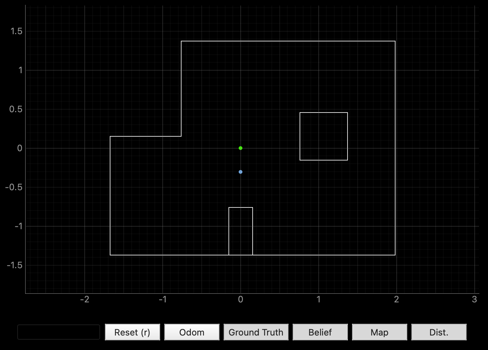
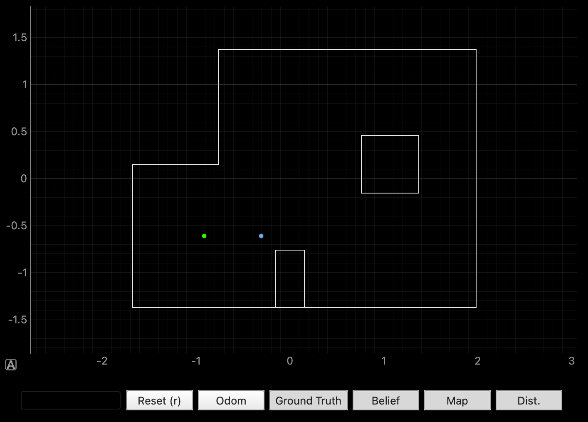
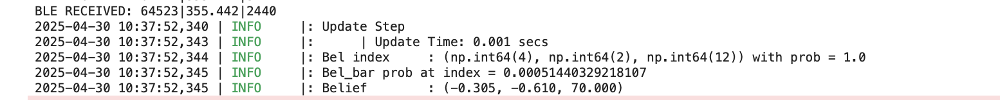
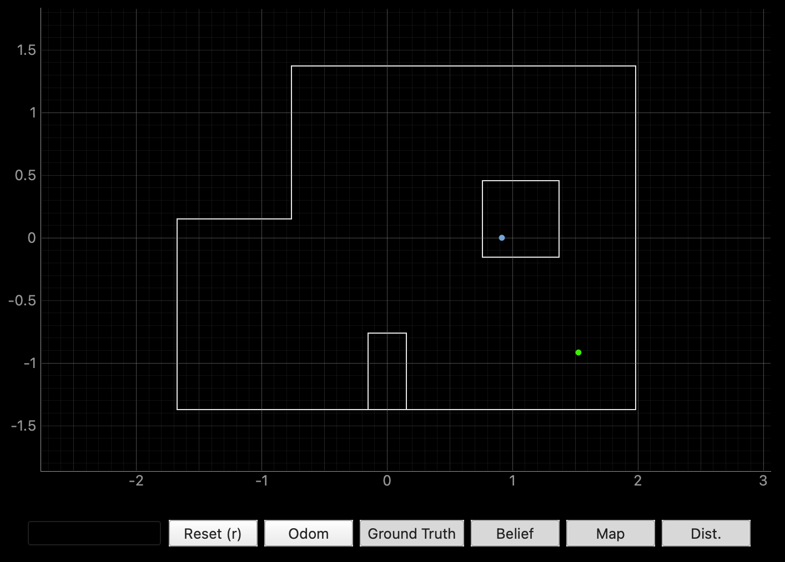
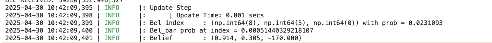
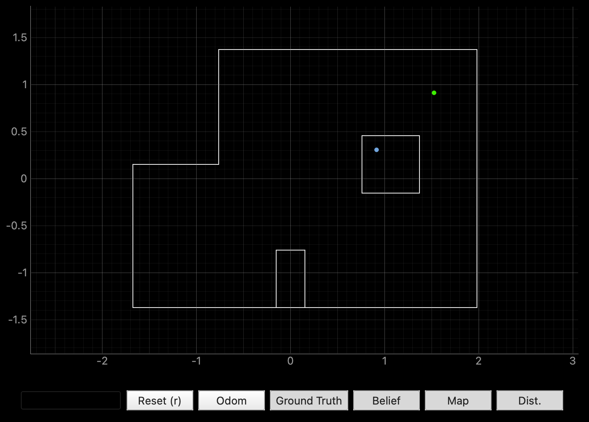
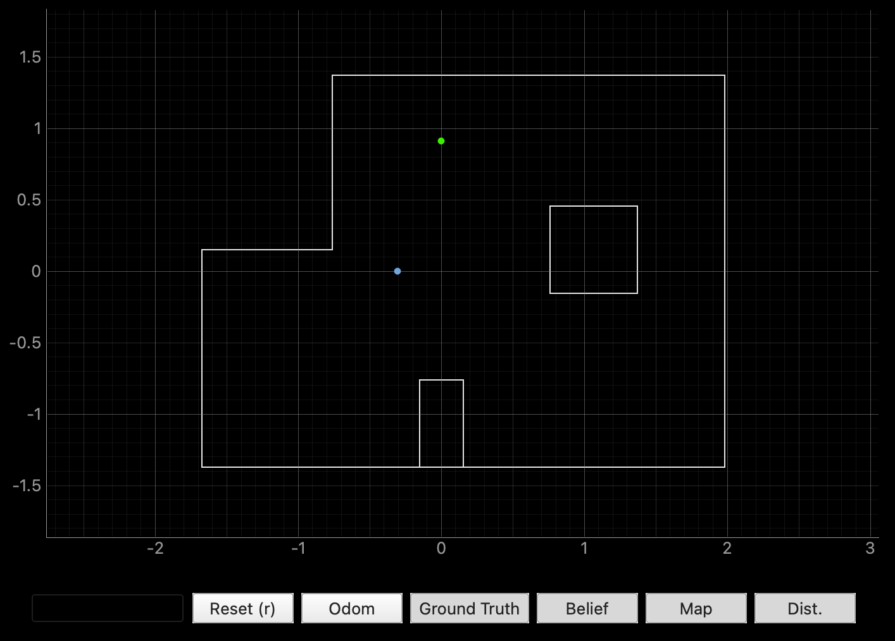

Lab 11: Localization - Real
Task 1: Testing localization simulation
This is the final plot from the simulation given in lab11_sim.ipynb. Similar to lab 10,
we can see that the belief plot in blue is quite accurate, especially near straight walls.
Task 2: Testing localization simulation
Below is the START_MAP command which sets the gains increments, and take 18 ToF readings at the initial angle.
I also implemented code to set the inital yaw measured as the reference (0˚) for the rotation, as I noticed the first yaw recorded wasn't always 0 due to drift in the DMP.
Explanation of the flag MAP_ON can be found in the Lab 9 writeup.
The only difference is that the ToF sensor now records exactly 18 values at each angle, rather than recording however many for 750 ms.
Below is my implementation of perform_observation_loop in in the RealRobot class. When called, function sends the START_MAP command to the robot,
waits 60 seconds for the robot to map the environment using asyncio.sleep, then send the data collected (time, yaw angle, ToF data) through the SEND_LOC_DATA command.
I added another sleep for 0.02 seconds to ensure all datapoints are sent without blocks.
Plots
Below are the plots after each rotation, where green represents the ground truth and blue represents the belief calculated with the ToF data collected.
At the origin (0, 0):
At (-3, -2):
 At (5, -3):
 At (5, 3):
At (0, 3):
Overall, the robot was able to estimate its position with an accuracy of about 1 meter, which isn’t ideal. It seemed to perform better at certain spots, like the origin (0, 0) or at (-3, -2), possibly because there were distinct features nearby such as long walls or corners that made it easier for the robot to recognize where it was. In particular, at positions like (5, 3) and (5, -3), the estimates were significantly off. I observed that the belief probabilities at these locations were extremely low, indicating a highly dispersed belief distribution and high uncertainty. Although I couldn’t pinpoint the exact cause, a possible factor could be that there were several people in the arena testing their robots at the same time, which could have interfered with the ToF readings. On the other hand, for estimates that were quite good, like at (-3, -2), the probability was close to 1.0.
I had to use Jeffery's robot for lab 9, so here is a video of MY robot doing a 360˚ turn in increments of 20˚ at (5, -3), recording 18 ToF data at each point!
References and Acknowledgements
- Daria Kot's website
- Jeffery Cai for helping me fix my Arduino IDE
- Bootstrap template for website